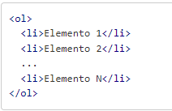
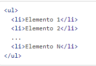
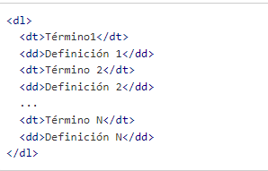

¿Que es FexBox?
Flexbox es un módulo de diseño de CSS3 que se creó para mejorar la forma en la que se hace diseño responsive, evitando así el uso de float, escribiendo menos código y facilitando el posicionamiento de elementos, incluso no teniendo noción del tamaño de éstos. Básicamente la idea de Flexbox es poder alterar el ancho, alto y posicionamiento de elementos de la mejor manera con el espacio del que disponemos. Los FlexBox se componen por contenedores los cuales son:
German Cabrera,(2020). Flexbox - ¿Qué es y para qué sirve?. SOMOSPNT.
https://somospnt.com/blog/148-flexbox-que-es-y-para-que-sirve¿Que es Lista?
Las listas en HTML nos permite crear conjuntos de elementos en forma de lista dentro de una página, todos los cuales irán precedidos, generalmente, por un guión o número.
Los tipos de listas en HTML son los siguientes:
- Listas ordenadas:
Las listas en HTML ordenadas son aquellas que nos muestran los elementos de la lista en orden. Para representar el orden tendremos los elementos numerados.Las listas en HTML ordenadas se representan mediante el elemento li.
Cada uno de los elementos de la lista ordenada se representará mediante el elemento LI.

- Listas desordenadas:
Las listas desordenadas en HTML nos sirven para mostrar los elementos sin ningún tipo de orden, simplemente precedidos por una viñeta que puede ser un punto, un cuadrado,…
Para representar los elementos de la lista desordenada utilizamos el mismo elemento que con las listas ordenadas, es decir, el elemento li.

- Listas de definiciones:
Las listas en HTML de definiciones en HTML nos sirven para montar listas en las que tenemos la estructura valor y definición. Suelen ser listas para definir términos, como si fuese un diccionario, si bien pueden ser cualquier par valor-definición.
Las listas en HTML de definiciones en HTML se construyen mediante el elemento dl.
En este caso, dentro de las listas en HTML de definiciones tenemos dos elementos anidados, el que representa al valor dt y el que representa a la definición dd. De esta forma la estructura de las listas en HTML de definiciones es la siguiente:

Victor Cuervo,(s.f.). Tutorial Html. ManualWeb.
https://www.manualweb.net/html/listas-html/¿Que es enlaces?
Lo más importante de los documentos HTML son los enlaces. Ya que mediante los enlaces en HTML podemos comunicar una página con otra. De esta forma, enlazando documentos HTML podemos acabar tejiendo lo que es Internet.
Para crear un enlace en HTML utilizamos el elemento A con la siguiente sintaxis:
En valor del atributo href puede ser cualquier URI que represente un recurso. Es decir, una página, una parte de una página, una URL genérica, un archivo,… De esta forma el enlace en HTML lo crearemos con la sintaxis:

Victor Cuervo,(s.f.). Tutorial Html. ManualWeb.
https://www.manualweb.net/html/enlaces-html/